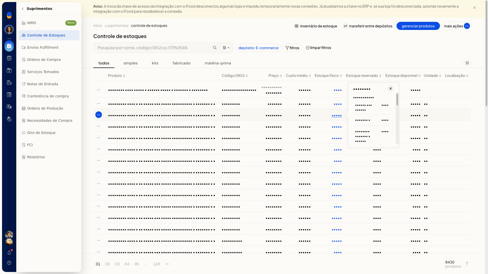
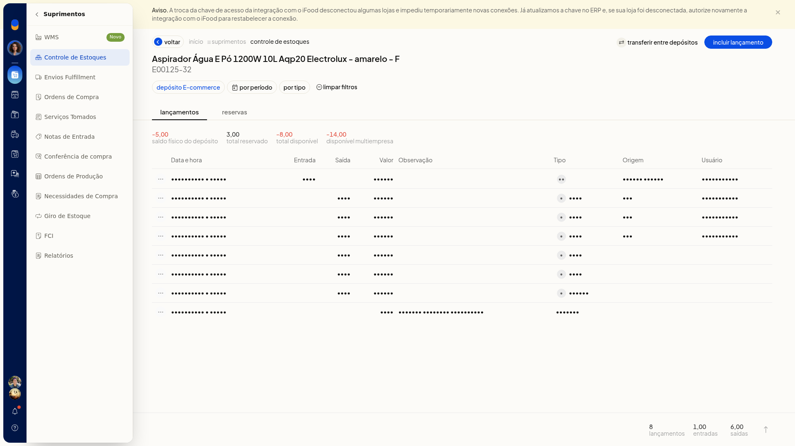
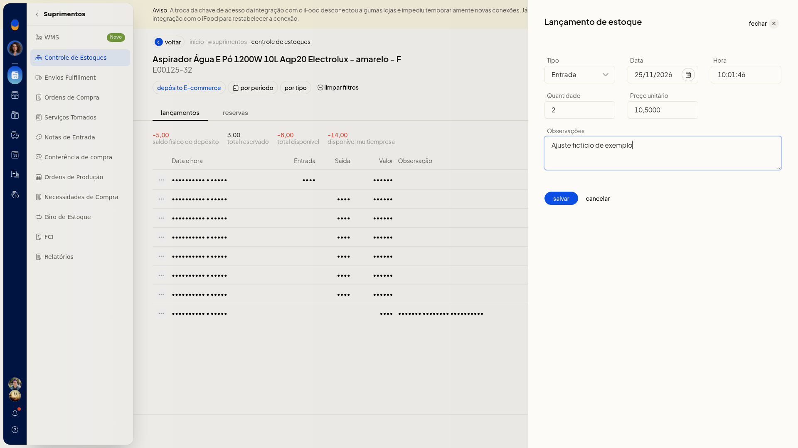
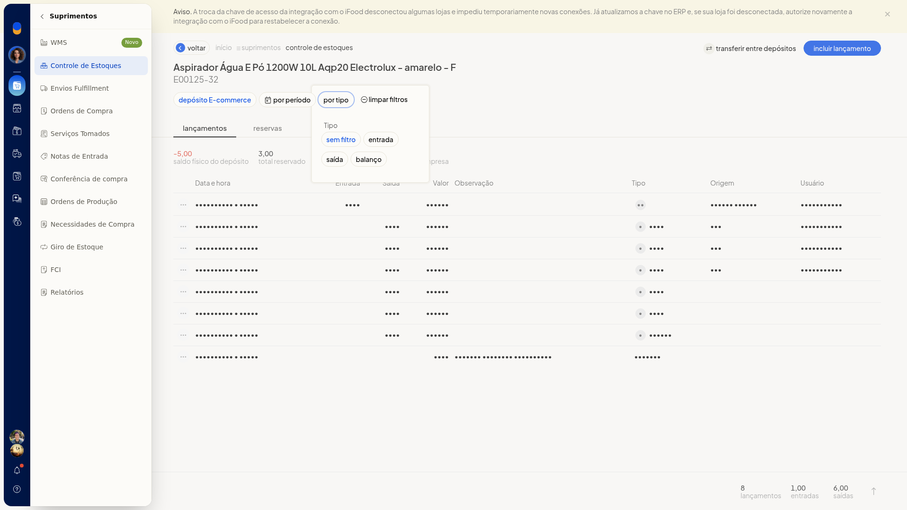
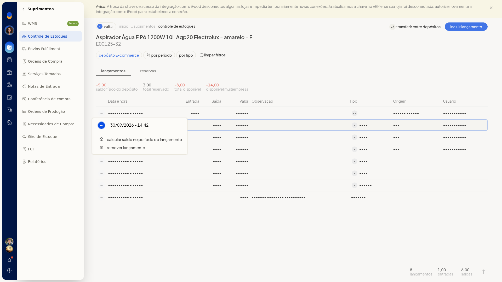
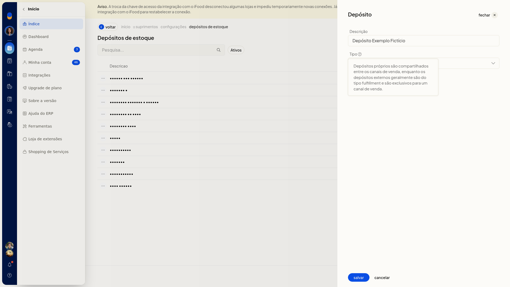
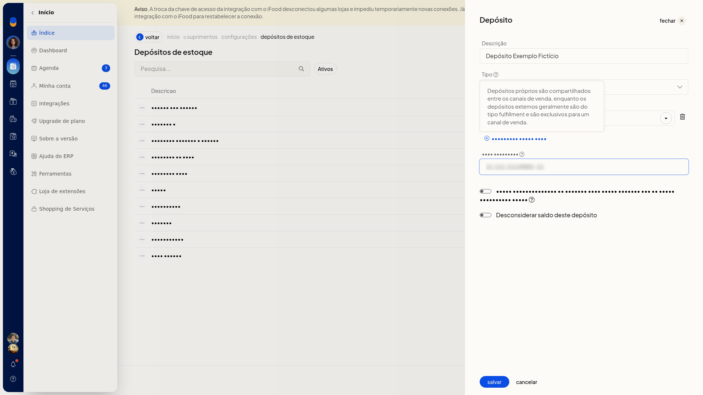
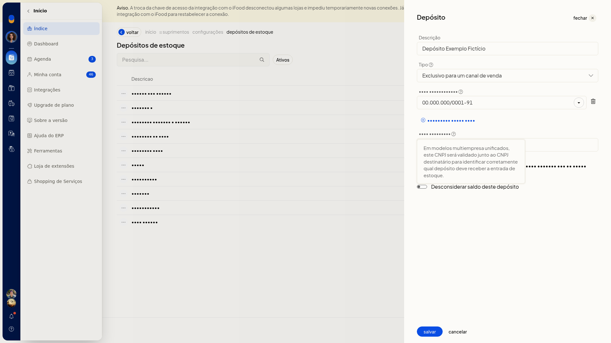
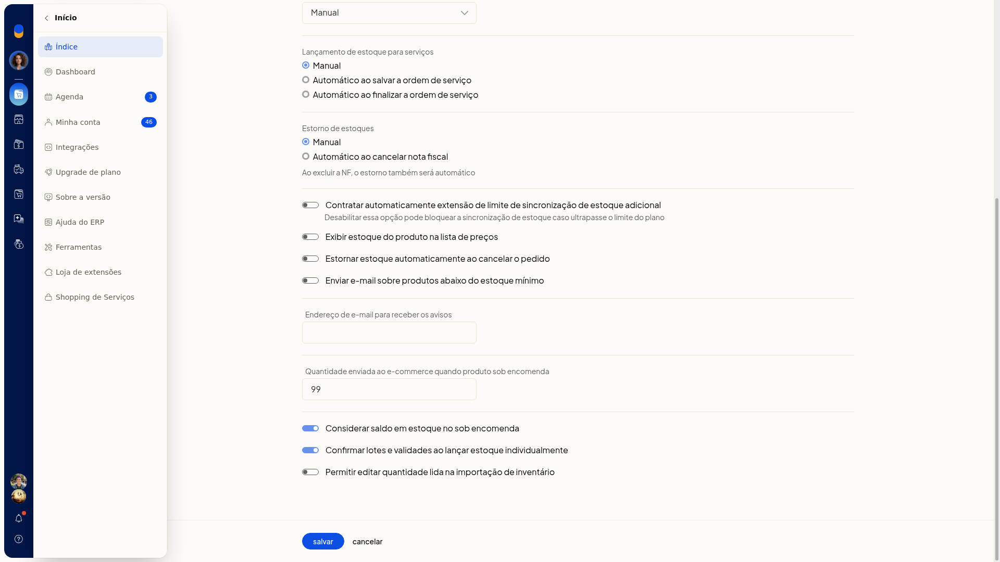

Depósitos e configurações de estoque
No ERP da Olist, o estoque fica organizado em depósitos. Você consulta o saldo de cada produto, inclusive quando o saldo físico ou o disponível está negativo, prepara um lançamento manual e define quando entradas, saídas e estornos são feitos.
No cadastro do produto, Dias para preparação informa quantos dias corridos o item leva para ficar disponível. Na inclusão de depósito, os tipos são Próprio e Exclusivo para um canal de venda.
Importante
- Se Permite estoque negativo não estiver em Sim, o sistema não lança estoque de nota fiscal, pedidos e ordem de serviço quando o saldo é insuficiente.
- O lançamento automático de saídas ao salvar o pedido é desaconselhado na tela.
- Ao excluir a nota fiscal, o estorno de estoque também é automático.
- O filtro de lançamentos lista Sem filtro, Entrada, Saída e Balanço. O estorno fica em Configurações de estoque.
Instruções
Consultar saldos e preparar um lançamento
-
Acesse Suprimentos > Controle de Estoques.

-
No menu Mais ações, use Transferir, Inventário ou Imprimir relatório. No menu da linha do saldo, use Imprimir etiquetas.
-
Abra o saldo físico para ver os detalhes por depósito.

-
Na tela de lançamentos do produto, confira os saldos físico, reservado, disponível e multiempresa.

-
Em Incluir lançamento, preencha Qtd, Preço e Observação. Nenhum desses campos é obrigatório. O preço aceita casas decimais.

-
Filtre os lançamentos por Sem filtro, Entrada, Saída ou Balanço.

-
No menu da linha de um lançamento, calcule o saldo no período do lançamento ou remova o lançamento.

Incluir um depósito
-
Acesse Configurações > Configurações ERP > Suprimentos > Depósitos de estoque. A lista tem filtro de ativos, busca e Incluir depósito.

-
No menu da linha de um depósito, use Inativar depósito ou Tornar depósito padrão.

-
Clique em Incluir depósito.

-
Preencha Descrição. O campo não é obrigatório.

-
Em Tipo, selecione Próprio ou Exclusivo para um canal de venda. Próprio vem selecionado. Depósitos próprios são compartilhados entre canais. Depósitos externos, em geral, são de fulfillment e exclusivos de um canal.

-
Marque Desconsiderar saldo deste depósito quando o saldo desse depósito não deve ser considerado.
-
Se escolher Exclusivo para um canal de venda, preencha CNPJ no formato AA.AAA.AAA/AAAA-00, use Adicionar outro CNPJ para incluir mais um e preencha CNPJ Remetente. Em multiempresa unificado, o CNPJ Remetente é validado junto ao CNPJ destinatário para identificar o depósito da entrada. Marque Criar transferências de estoque para notas fiscais com os CNPJs informados acima quando quiser essa transferência. Esses campos não são obrigatórios.


Definir as configurações de estoque
-
Acesse Configurações > Configurações ERP > Suprimentos > Configurações de estoque.
-
Em Permite estoque negativo, escolha Sim, Não - validar todos os depósitos com saldos a considerar ou Não - validar depósito da venda.

-
Em saídas, escolha Manual, automático ao autorizar a nota fiscal, ao salvar a nota fiscal, ao salvar o pedido ou ao marcar enviado.
-
Em entradas, escolha Manual, ao autorizar a nota fiscal, ao salvar a nota fiscal, ao salvar a ordem de compra ou ao finalizar a conferência.
-
Em serviços, escolha Manual, ao salvar a ordem de serviço ou ao finalizar a ordem de serviço.
-
Em Estorno de estoques, escolha Manual ou Automático ao cancelar nota fiscal. Na mesma tela, ajuste as demais caixas: contratar extensão de limite de sincronização, exibir estoque na lista de preços, estornar ao cancelar pedido, e-mail abaixo do mínimo, considerar saldo no sob encomenda, confirmar lotes e validades e permitir editar quantidade na importação de inventário.

Informar os dias para preparação
-
Acesse Cadastros > Produtos.
-
Clique em Incluir produto.
-
Na seção Estoque, preencha Controlar estoque, Estoque inicial, Estoque mínimo, Estoque máximo, Sob encomenda, Controlar lotes, Localização e Dias para preparação. Nenhum desses campos é obrigatório. Estoque inicial é a quantidade no depósito escolhido. Sob encomenda e Controlar lotes aceitam Sim ou Não.

-
Em Dias para preparação, informe quantos dias corridos você demora para disponibilizar o produto. O depósito das variações usa o rótulo Depósito utilizado para as variações, com os depósitos já cadastrados.

Resultado
Em Depósitos de estoque, o formulário do novo depósito fica com a descrição e, no tipo exclusivo, com os CNPJs informados. Em Configurações de estoque, a tela mostra as regras de estoque negativo, de lançamento e de estorno. No novo produto, a seção Estoque reúne sob encomenda, localização e Dias para preparação.